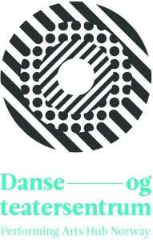

Infomøte om det internasjonale scenekunstmarkedet, med Danse- og teatersentrum
- Kategori:
- Åpne arrangementer
Åpne arrangementer
Åpent for alle som jobber innen kulturfeltet, inkludert studenter. - Dato:
- 22.10.2015 til 22.10.2015
- Start kl :
- 12:00
- Slutt kl :
- 15:00
- Adresse:
- Norsk Skuespillersenter, Welhavens gate 1, Oslo
Danse- og teatersentrum informerer om det internasjonale scenekunstmarkedet. Hvor begynner man? Markeder, festivaler og nettverk.
{kind=link}
Informasjonsmøtet holdes i to deler:
Del 1: Danse- og teatersentrum(DTS) forteller overordnet om det internasjonale arbeidet, hvorfor de gjør det og hvordan. Hvordan arbeider DTS fra A-Å ifht å stimulere internasjonal etterspørsel, som til slutt ender i en invitasjon til gjestespill. Hvordan lyses deltagelse ut m.m.
pause
Del 2: Praktiske råd og tips for kunstnere og produsenter som drar til en festival eller marked. What do to. Hvordan forbereder man seg på forhånd, hva bør man ha med seg, og tips til hvordan man kan bygge nettverk ute etc. Dersom du har mottatt en invitasjon, hva da? Informasjon om selve reisestøtteordningen.
Danse- og teatersentrums daglige leder Tove Bratten og faglig rådgiver Christina Friis informerer og leder oss gjennom møtet. http://www.danseogteatersentrum.no/
Benytt anledningen til å stille spørsmål om det du lurer på vedrørende det internasjonale scenekunstmarkedet!
Selv om arrangementet er gratis og åpent for alle i scenekunstfeltet er det fint om du melder deg på, så vi vet ca. hvor mange som kommer.
I samarbeid med Skuespiller- og danseralliansen.